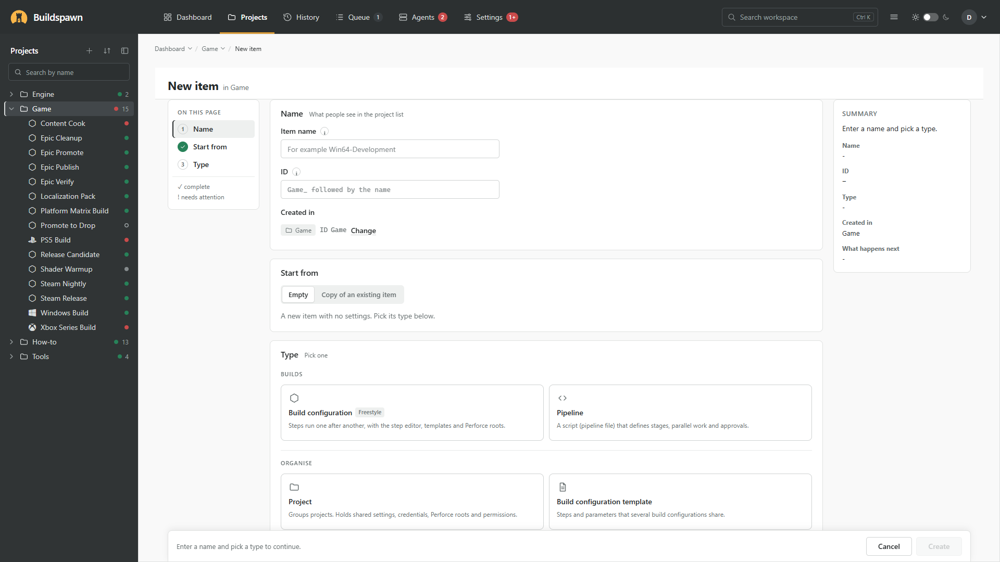

Create a build configuration from a template
Make a new build configuration that shares its steps with a template, so a change to the template reaches all of them.
The studio has a template Platform build with the compile, cook and package steps. It now needs a Switch Build that does the same for the Nintendo Switch.
Before you start
- A template in the project, or in a project above it. See Templates.
- The Create permission on the project.
Steps
Create it from the template
- Open the project and click New Item.
- Type
Switch Build. Check the ID. - Under Start from choose Template. The list shows the templates you can use here, with their number of steps and parameters.
- Pick Platform build. Leave Keep linked to the template on, so later changes to the template reach this build. Clear it to copy the steps once.
- Under Type choose Build configuration (the card says linked to the template). Click Create.

Change what differs
- On Settings › Parameters, click Override on
PLATFORMand typeSwitch. - On General choose the Nintendo Switch icon.
- Add its own triggers and build features. Templates do not carry them.
- Click Save.
Check it worked
- On Settings › Build Steps, the steps carry a chip with the template name.
- Open More › Templates. It lists Platform build.
- Open the template. Used by lists Switch Build.
- Run it. The log shows the template steps with
PLATFORMset toSwitch.
Troubleshooting
| Problem | What to do |
|---|---|
| Template is missing from Start from | No template is within reach. A build configuration can use the templates of its own project and the projects above. |
| I want to stop following the template | Detach it. The build configuration keeps a copy of the steps. See Templates. |